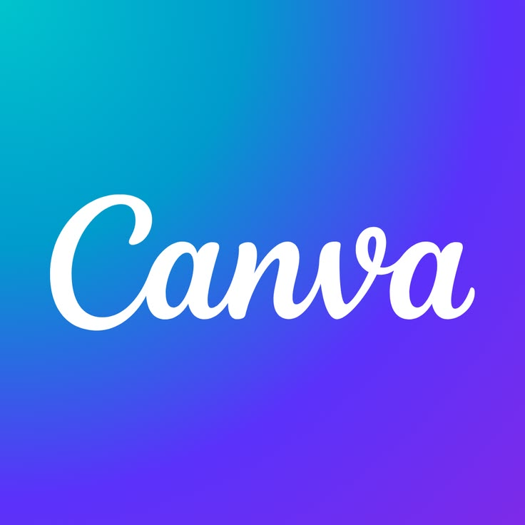
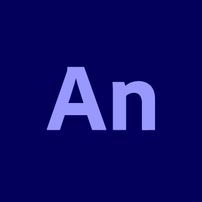

About Me
I am a deeply passionate visual designer who loves stepping outside my comfort zone to experiment with different media, unique textures, and bold themes that challenge my creativity.
Approach & Style
Every piece of art needs a story behind it, not just a random arrangement of lines and colors. My approach starts by truly understanding the narrative behind a project, ensuring every bold visual choice I make serves a deeper purpose.
What do I use


